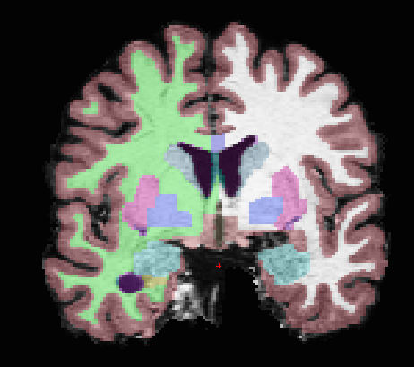

Example Results
Registration
Registration of T1 to Diffusion space (b0). T1 in copper overlayed to the b0 image.

Segmentation
Surfaces are extracted using Freesurfer.

T1 is segmented using Freesurfer.

Parcellation
Cortical and subcortical parcellation are shown with Freeview.

Tractography
DSI Tractography results are displayed with TrackVis.


Connection Matrix Creation
Generated connection matrix are displayed with Chaco.

Rs-fMRI Average Time-Courses
Average time-courses are displayed with Matplotlib.